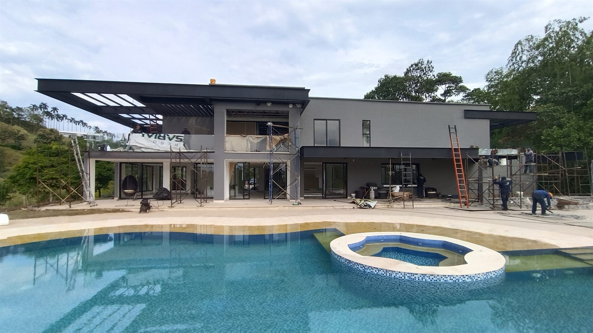
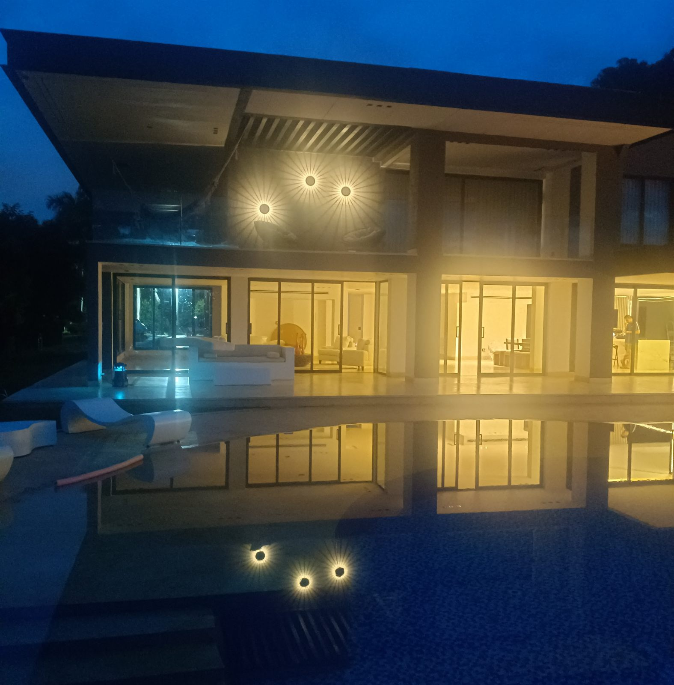
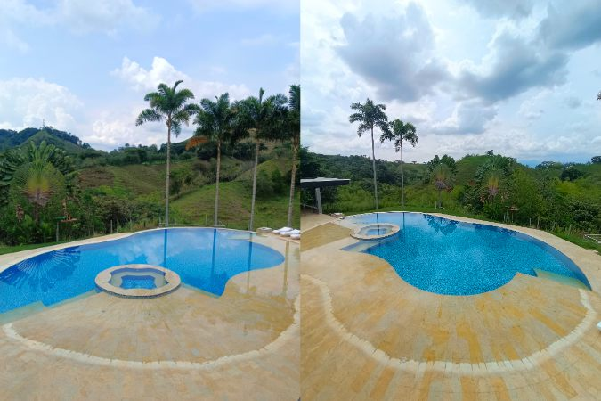
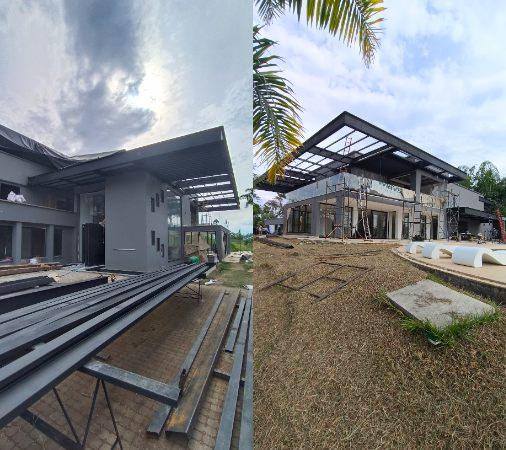
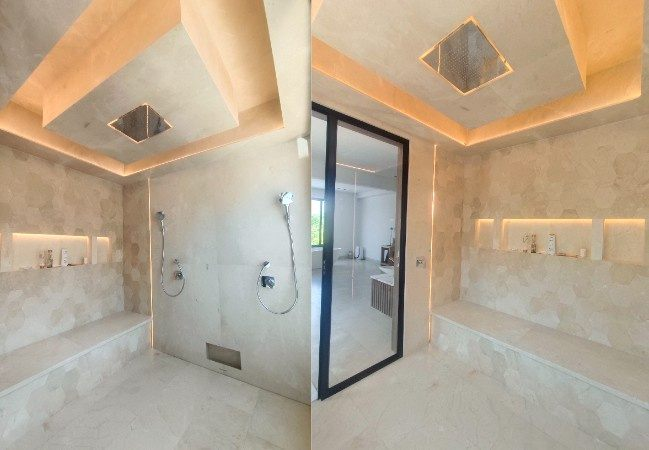

Completed project · Housing
Casa del Bosque, Cauquillo — Pereira
LocationCerritos, Pereira · Risaralda
Period2024–2026
Project typeHousing
Photographs5
Two-storey country home in Cauquillo, Pereira, with swimming pool, terraces and steel structure for roofs and pergolas.
The challenge
The project combines concrete and steel, two systems with different tolerances and timings. The pergolas and steel roofs are shop-fabricated and arrive at fixed dimensions, so the concrete structure had to be built to millimetre precision for everything to fit without on-site adjustments.
Scope of works
- Foundations and two-storey concrete structure
- Steel structure for roofs and pergolas
- Swimming pool and terraces
- Masonry and rendering
- Plumbing, drainage and electrical services
- Architectural finishes and external works
Photographic record





Related service
Have a similar project? Tell us what you need and we will arrange a site visit.